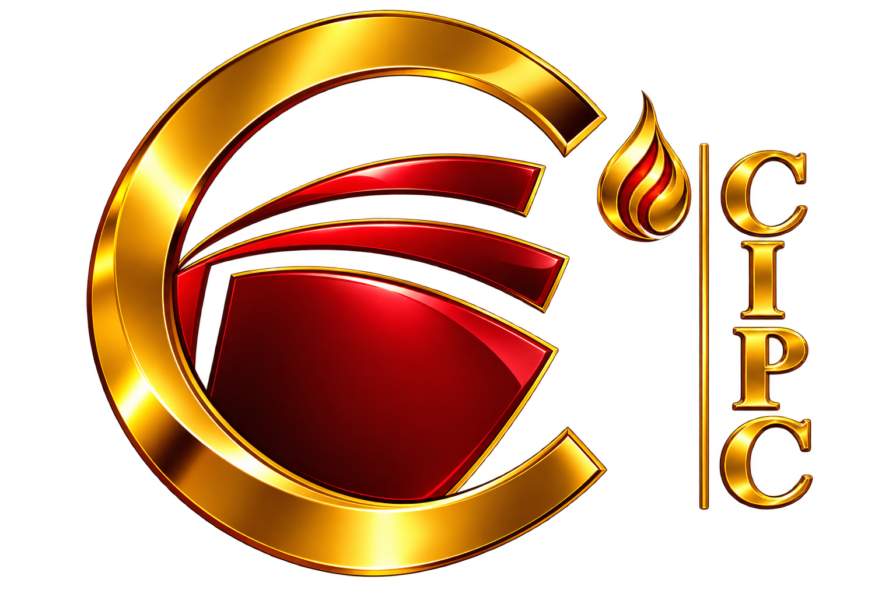

Notre vision
À publier après validation par l'Église.

CIPC Centre Impact de la Parole faite Chair
Un lieu de foi, de transformation et de communion fraternelle. Grandissons ensemble dans la connaissance de la Parole de Dieu et vivons pleinement notre vocation en Christ.
Les actualités et prédications seront publiées ici après validation des informations par le CIPC.
Le CIPC
Le Centre Impact de la Parole faite Chair est une communauté chrétienne à Abidjan. Nous souhaitons être un lieu de foi, de transformation et de communion fraternelle.
La présentation de l'histoire, de la vision, de la mission et des valeurs officielles sera ajoutée après validation par l'Église.
À publier après validation par l'Église.
À publier après validation par l'Église.
À publier après validation par l'Église.
La vie de l'Église
Retrouvez ici les prochaines activités annoncées par le CIPC.
Les dates, horaires et détails seront affichés après confirmation par les responsables de l'Église.
Demander des informationsEngagement & service
Les ministères et leurs descriptions seront présentés après validation de la liste officielle.
Vous pouvez déjà nous écrire pour demander comment servir ou rejoindre une équipe.
Enseignements & louange
Les titres, intervenants, dates et liens vidéo seront ajoutés dès qu'ils auront été transmis par l'Église.
Échangeons
Une question ou une demande de rendez-vous ? Laissez vos coordonnées et consultez le récapitulatif avant de nous contacter.